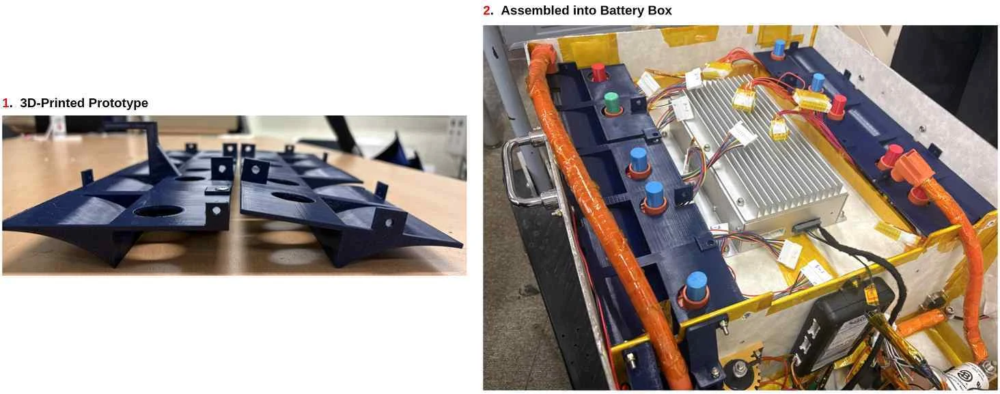
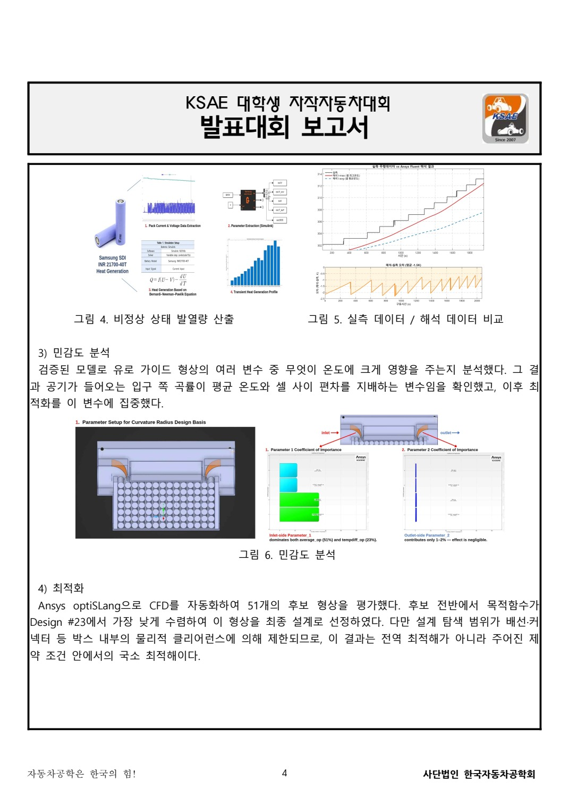
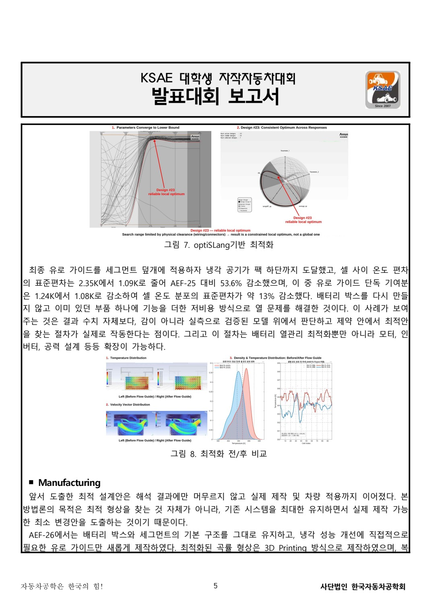

열관리 문제와 기계 담당의 역할
기존 구조 안에서 바꿀 수 있는 부분 찾기
A-FA 팀의 배터리 열관리 프로젝트는 셀 위치에 따른 온도 차이에서 출발했습니다. 기존 주행 기록과 비교 모델을 바탕으로, 배터리 박스의 기본 구조를 유지하면서 공기가 팩 하단에 도달하도록 유로를 바꾸는 방향을 검토했습니다. 전체 시스템을 새로 만드는 대신 필요한 부품을 더하는 최소 변경 접근입니다.
제가 맡은 범위
부품 설계, 3D프린팅, 용접과 정적해석에 기여했고 발표대회 보고서의 초안 작성·자료 통합을 맡았습니다. CFD 해석과 optiSLang 자동화, 행사 현장 발표는 각 담당 팀원이 수행했습니다. 팀의 계산 결과를 제 독자 CFD 개발 성과로 옮기지 않습니다.
기계 설계의 요구조건
해석에서 유리한 형상이 실제 팩에 들어가려면 배선·커넥터의 공간, 기존 덮개와의 결합, 제작과 장착 가능성을 함께 고려해야 합니다. 유로 가이드를 세그먼트 덮개에 더하는 방식으로 이러한 조건을 검토했습니다. 열유동 성능과 조립 가능성은 별개의 확인 항목입니다.
보고서의 역할
설계·해석·제작·비용 자료가 서로 다른 팀원에게 분산되어 있었습니다. 이를 하나의 문제와 해결 방향으로 묶고, 기존 자원을 유지하는 제작 방향과 실제 부품 적용을 보고서에 설명했습니다. 공동 작업의 각 담당을 구분하면서도 독자가 전체 과정을 따라갈 수 있도록 정리한 경험입니다.
기존 차량 기록으로 정의한 온도 분포 문제
팀 보고서는 기존 차량의 과거 내구 주행에서 셀 위치에 따른 최대 온도차가 약 13도까지 벌어진 상황을 문제로 삼았습니다. 보고서에 기재된 주행은 41분·약 4 kWh 소비, 최대 팩 전류 111.9 A, 최고 셀 온도 41도입니다. 이 과거 기록은 열원과 모델 비교의 출발점이며, AEF-26의 동적 경기 완주 기록으로 소개하지 않습니다.
최고 온도 하나를 낮추는 것보다 공기가 도달하지 않는 구역의 편차를 줄이는 방향을 검토했습니다. 팀의 해결 구상은 inlet 안쪽에 곡률을 더해 공기를 팩 하단으로 보내는 유로 가이드입니다. 기본 박스와 세그먼트를 유지한다는 제약이 부품의 위치·형상·제작 방식을 결정하는 입력이 되었습니다.
근거: 「실주행 데이터 기반 검증과 CFD 자동화를 통한 배터리 팩 저비용 열관리 최적화」 2~6쪽.
51개 후보 검토와 실제 부품 적용

팀의 해석 과정
팀은 실주행 전류 기반의 열원을 적용하고 모델을 실측 온도와 비교했습니다. 배선·커넥터 제약을 반영한 공간 안에서 51개 후보 형상을 평가하고, 공기가 전달되는 위치와 온도 분포를 비교했습니다. 이 수는 팀의 형상 평가 범위이며 제가 51개를 독자적으로 해석했다는 뜻은 아닙니다.
계산에서 부품으로 옮기는 과정
선택한 유로를 3D프린팅 부품으로 제작하고 배터리 팩에 장착해 배선·커넥터와의 간섭을 확인했습니다. 실제 적용 사진은 출력물 자체와 팩 내부에서의 위치를 함께 보여 줍니다. 계산 그림만으로 장착 가능성을 설명하기 어려운 부분을 실물 결과물이 보완합니다.
결과 이미지를 읽는 방법
해석 페이지의 색상 분포와 온도 비교는 시뮬레이션 결과입니다. 유로 가이드와 배터리 팩 적용 이미지는 실제 제작·장착 결과입니다. 두 자료를 같은 검증으로 묶지 않고, 어떤 단계까지 진행했는지 나누어 설명했습니다.
자료 통합 산출물
보고서 초안과 기술·비용 자료를 통합하며 분량과 제출 형식을 다듬었습니다. 장치의 기능뿐 아니라 기존 박스를 재사용하고 필요한 가이드를 더하는 방향의 자원 활용과 제작 가능성을 설명했습니다. 제출용 보고서가 팀의 실제 역할과 결과를 일관되게 담도록 정리한 작업도 최종 산출물의 일부입니다.


실측 비교·민감도·형상 탐색을 연결한 팀 과정
팀은 주행 전류를 Batemo 셀 모델에 입력해 시간별 발열량을 산출하고 Ansys Fluent의 열원으로 사용했습니다. 보고서는 해석 온도와 기존 실측 온도의 차이가 해당 비교에서 1.5 K 이내였다고 설명합니다. 이는 팀 보고서에 기록한 모델 비교이며 제가 원시 모델을 독립적으로 재실행해 검증한 결과와는 구분합니다.
민감도 분석에서 입구 곡률을 주요 설계변수로 검토하고, optiSLang으로 51개 후보를 평가해 Design #23을 선택했습니다. 탐색 범위는 배선·커넥터 등 팩 내부 공간으로 제한되어 있으므로 모든 가능한 형상을 평가한 전역 최적해가 아닙니다. 해당 해석과 자동화는 담당 팀원의 작업이고 저는 기계 설계·제작과 보고서 통합에서 이를 실제 부품과 연결했습니다.
최종 형상은 세그먼트 덮개에 더하는 3D프린팅 가이드로 만들었습니다. 별도 금형 없이 곡률을 구현하고 기존 구조를 유지한 채 수정할 수 있다는 제작 방향입니다. 실제 팩에 장착한 뒤 배선과 커넥터의 공간 간섭을 확인한 사진이 아래 결과물입니다.
근거: 「실주행 데이터 기반 검증과 CFD 자동화를 통한 배터리 팩 저비용 열관리 최적화」 2~6쪽.
팀 수상과 검증의 다음 단계
확인 가능한 결과
실물 유로 가이드를 만들고 팩에 장착했으며, 배선·커넥터와의 공간 간섭을 검토했습니다. 팀 보고서와 발표를 통해 해당 작업을 정리했고 2026 KSAE 대학생 자작자동차대회 발표대회에서 우수상을 받았습니다. 이는 팀 수상이며 제가 단독 발표해 받은 상으로 표시하지 않습니다.
온도 개선 수치의 성격
보고서의 최적화 전후 온도 분포와 개선값은 해석 비교 결과입니다. 새 가이드를 장착한 후 트랙에서 열성능을 측정해 같은 개선을 재현했다는 증거와는 구분합니다. 기존 기록으로 모델을 비교한 단계와 새 형상의 장착 후 검증 단계도 서로 다릅니다.
후속 확인에서 필요한 것
동일한 부하·환경 조건에서 새 가이드의 장착 전후 온도, 셀 위치별 편차와 운전 조건을 함께 기록해야 실제 적용 효과를 평가할 수 있습니다. 부품의 열·진동 조건에서의 유지 상태도 별도 확인 대상입니다. 이는 이번 결과의 한계를 바탕으로 정리한 다음 검증 과제입니다.
이 경험이 남긴 것
열유동 해석을 담당한 동료와 기계 설계·제작을 연결하고, 실제 공간 제약을 반영해 계산의 형상을 부품으로 바꾸었습니다. 여러 역할의 기술 자료를 제출 보고서로 엮는 경험도 함께 쌓았습니다. 설계·해석·제작·실측의 각 단계를 구분해 설명하는 태도를 이후 프로젝트에도 적용하려고 합니다.
비교 기준이 다른 두 온도 편차 수치
보고서에는 AEF-25 대비 셀 온도 표준편차 2.35 → 1.09 K, 약 53.6% 변화와, 유로 가이드 단독 기여를 설명한 1.24 → 1.08 K, 약 13% 변화가 함께 있습니다. 두 수치는 기준 상태가 다르므로 같은 개선율처럼 섞지 않습니다. 어느 비교에서 나온 값인지 남기고, 큰 숫자 하나를 개인의 장착 후 실차 성능으로 제시하지 않습니다.
기존 데이터로 모델을 비교한 것, 그 모델에서 형상을 탐색한 것, 실제 부품을 제작해 장착한 것, 장착 후 주행에서 열성능을 다시 측정하는 것은 각각 다른 단계입니다. 이 프로젝트에서 확인한 실제 제작 결과와 남아 있는 장착 후 열성능 검증을 나누어 설명합니다. 팀의 저비용 최적화 방법론과 사업성 설명도 제안의 범위이며 판매·고객·양산 실적으로 확대하지 않습니다.
근거: 「실주행 데이터 기반 검증과 CFD 자동화를 통한 배터리 팩 저비용 열관리 최적화」 2~6쪽.
기록의 근거
근거: 「실주행 데이터 기반 검증과 CFD 자동화를 통한 배터리 팩 저비용 열관리 최적화」 1·3~6쪽, 2026.09.02~09.09 보고서 작성·역할 분담 대화, 본인 경험 정리. 사진은 보고서 6쪽 그림 9입니다.
2026-10-20 기준. 개인 담당과 팀 기여, 해석·계획과 실측·완료 결과를 구분했습니다.